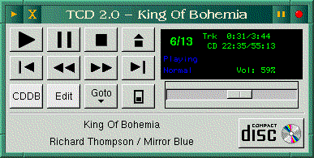

![[ TABLE OF CONTENTS ]](../gx/indexnew.gif)
![[ FRONT PAGE ]](../gx/homenew.gif)


CD-players for Linux abound these days, with both curses-based console programs and X programs available in a variety of degrees of usefulness, complexity, and polish. There are even command-line players, though with the current CDROM drives (with their built-in controls) a player is no longer strictly necessary. The main advantage of using a dedicated CD-player program is the possibility of using a database containing titles and track names, as well as play-lists, auto-repeating and other user conveniences.
Xmcd is one of the more popular X-windows players; it's a freely available program but does require the proprietary Motif libs for compilation from source, though statically-linked binaries are available. One reason for its popularity is the internet database of CD titles and tracklists which is accessible from within the program. This database is remarkably complete, and once you start using it only the most obscure titles should ever have to be entered manually. This database project has really mushroomed; originally Ti Kan (author of Xmcd) created the database format for use in his program, and distributed database files made up of user contributions. The files began to become excessively large and cumbersome, so the idea of making them directly accessible via the internet arose. Ti Kan recruited Steve Scherf to write a protocol which would make possible quick retrieval of individual queries, and Steve found sites which agreed to become servers. There are now CDDB servers distributed across the planet, and the databases are even accessible from behind firewalls from many HTTP servers. Information on incorporating the protocol into a CD-player program is available from the cddb website; this material is freely available, and assistance is offered for freeware and shareware developers.
Unfortunately, I never have been able to get Xmcd to work consistently on my system; there is something in the way my ATAPI drive works which causes problems. Xmcd was originally written with SCSI drives in mind, and although ATAPI IDE drive support has been added it didn't seem to care for my drive's peculiarities.
I've been using Tim Gerla's simple but useful console-mode player tcd for several months, and have become quite adept at quickly typing in disc and track information. Recently Tim introduced a new version. and after unpacking it I was surprised and pleased to see that not only had he produced a GTK-based X version, but the program now supports the CDDB protocol. So one day I was on the internet, downloading some beta software, and started up the new tcd version. I was playing a disc which I hadn't entered into the program's database, and I happened to see a notice on the screen which said "[D] Download CDDB data". I gave it a try, thinking that it would probably take awhile, and that the particular CD I was playing probably wasn't even listed. Within two seconds the title and track data was displayed on the screen, which startled and impressed me.
This newly released version, 2.0b, is a beta, though I haven't encountered
any but the most minor bugs. The GTK version doubtless will be revised, as
GTK is still under active development. Here's a screenshot of the interface:

It's a nice-looking interface, with that distinctive GTK look made familiar by the Gimp. When the CDDB button is clicked a window opens with the default server and port displayed in entry fields, which can then be edited depending on your location. A convenient drop-down menu of track titles (invoked by clicking the Goto button) is a feature not found on many players.
Most of tcd's features can be found on other X-windows players, though the only others which are CDDB-enabled (as far as I know) are Xmcd and the KDE CD-player Kscd, written by Johannes Wuebben. The last-mentioned is a very usable and well-done application, but requires the KDE and Qt libraries in order to function. Gtcd only needs gtk+-0.99.3, which is also needed by the Gimp.
An unusual feature is the existence of both console and X executables which share the same features, configuration, and database. I use X about two-thirds of the time, shutting it down when I'm compiling large applications or just writing in an editor, and it's nice to be able to use the same CD-player in each environment.
As I write this, the source and binary distributions are still in the incoming directory at Sunsite, with the filenames prefixed by tcd-2.0b; an alternate site is here.